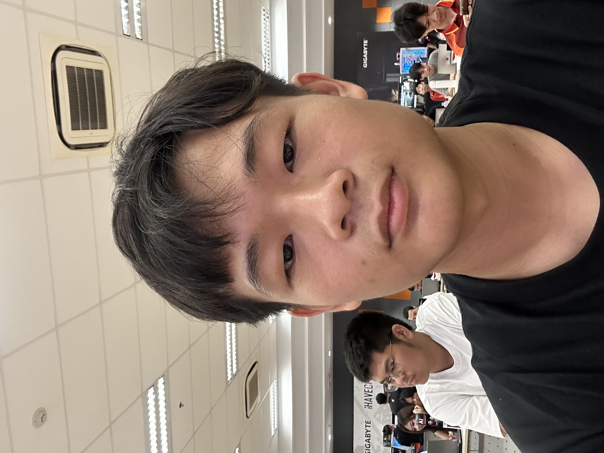
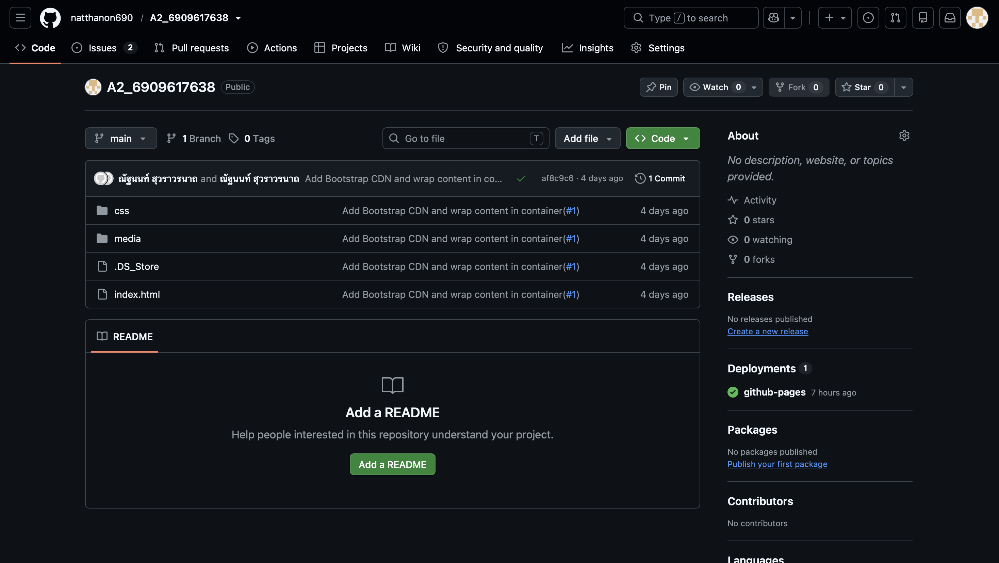
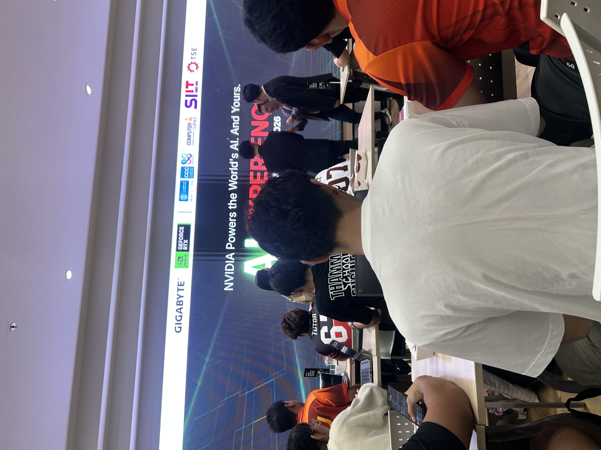

ณัฐนนท์ สุวราวรนาถ
รหัสนักศึกษา 6909617638
คณะวิทยาศาสตร์และเทคโนโลยี
สาขาวิชาวิทยาการคอมพิวเตอร์ (Computer Science)
ความสนใจ: เล่นเกม ดูหนัง เล่นกีฬา และสนใจ AI โดยเฉพาะ Local AI
Title: CS100 A2: Individual Responsive Learning Portfolio
Type: Course Assignment
Date: 11 Oct 2026
Role: Individual Developer
Description: พัฒนาเว็บไซต์ Learning Portfolio หน้าเดียวด้วย HTML , CSS และBootstrap
Skills: HTML, CSS, Semantic HTML, Bootstrap,Git/GitHub
Reflection: ตอนทำงานนี้ผมได้ปรับหน้าเว็บจาก A1 มาใช้ Bootstrap โดยใช้ container, grid และ card จัดหน้าให้แสดงผลได้ทั้งบนคอมพิวเตอร์และมือถือ รวมถึงฝึกทำงานตาม GitHub Issues แล้ว commit และ push ขึ้น GitHub Pages ปัญหาที่เจอคือตอนแรก card สองใบสูงไม่เท่ากันและรูปล้นกรอบเมื่อย่อหน้าจอ ผมจึงลองใช้ h-100 กับ img-fluid แล้วย่อขยายหน้าต่างดูผลทีละครั้ง จนเข้าใจว่า grid กับ utility class ของ Bootstrap ช่วยให้หน้าเว็บปรับตามขนาดจอได้ ครั้งต่อไปอยากลองปรับสีและฟอนต์ให้เป็นสไตล์ของตัวเอง และเพิ่มผลงานใหม่ ๆ เข้าไป
Evidence:
GitHub Repository Click Here
My web Click Here

Title: เข้าร่วมกิจกรรม AI Experience
Type: Activity
Date: 4 Sep 2026
Role: Participant
Description: เข้าร่วมงานบรรยายเกี่ยวกับ AI ได้ฟังประโยชน์ของ AI แต่ละตัวและเนื้อหาเชิงลึกเรื่อง Local AI พร้อมทำ workshop ใช้งาน Ollama
Skills: Local AI, Ollama, AI Awareness
Reflection: ในงานนี้ผมได้ฟังบรรยายเรื่องประโยชน์ของ AI แต่ละตัว และเรื่อง Local AI ที่รันในเครื่องของเราเอง จากนั้นได้ลงมือทำ workshop กับ Ollama ทำให้รู้ว่า AI ไม่ได้ใช้ได้แค่ผ่านเว็บ แต่ติดตั้งและใช้บนเครื่องตัวเองได้ด้วย ปัญหาที่เจอคือการ์ดจอ RTX 4050 ในเครื่องของผมรันโมเดลขนาดใหญ่ไม่ไหว ทำให้เครื่องค้าง ผมจึงเปลี่ยนไปใช้โมเดลขนาดเล็กลงแทน ซึ่งรันได้ลื่นขึ้น และทำให้รู้ว่าต้องเลือกขนาดโมเดลให้เหมาะกับเครื่องที่มี ครั้งต่อไปอยากลองใช้ Ollama กับงานของตัวเอง เช่น ช่วยอธิบายโค้ดที่เรียนในวิชา
Evidence:
